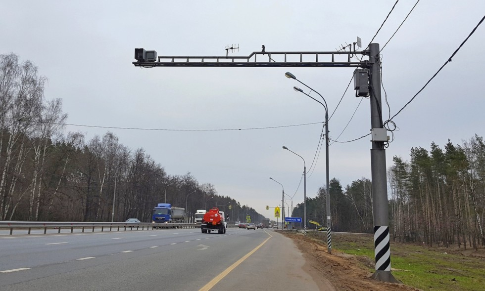
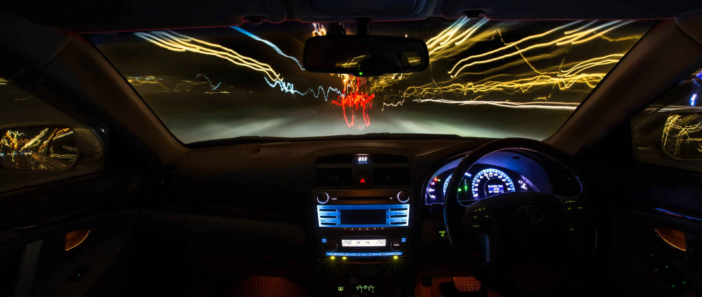

B любом тематическо-техническом коммьюнити есть свои «фирменные» заморочки. Любители оружия заклюют неофита, неосторожно называющего спусковой крючок курком, а знатоки радар-детекторов всегда троллят тех, кто по старинке именует эти устройства «антирадарами». Дескать, радар-детектор – это устройство, только лишь предупреждающее о засаде ДПС, а антирадар – это активный подавитель, наводящий на «гаишное» оборудование целенаправленную помеху по эфиру, мешающую ему работать. В сущности, именно так оно и есть, хотя придирки к терминологии в этом случае – чисто из вредности, ибо 99,9% всех устройств, которыми пользуются обычные автовладельцы, это именно приборы предупреждающего типа. И хоть научно радар-детекторами их называй, хоть вульгарно антирадарами – суть не меняется, и всем все ясно.
Настоящие же антирадары, активные подавители или «джаммеры», как их еще называют – вещь достаточно редкая и во многом полумифическая. Мало кто их видел вживую, и еще меньше тех, кому доводилось ими пользоваться. Давайте приоткроем завесу «тайны»: все об активных антирадарах-джаммерах «Колесам» расскажет основатель форума о радар-детекторах Владимир «MONO».

К: Как все начиналось? Ну, во всяком случае, в России?
B: История появления и распространения радар-джаммеров всегда была узконишевой. В 90-е годы на российском рынке встречались активные антирадары-джаммеры американского производства «Scorpion XP». Они действительно были эффективны против наших радаров старых поколений «Сокол» и «Искра», поскольку те излучали хотя и мощные, но простые слабомодулированные сигналы, которые было легко подавить, передав на радар помеху уровнем сильнее, чем его отраженный от машины сигнал. Но даже в конце 90-х, когда обновился характер сигналов «Искры», «Скорпион» с ней справляться перестал. Распространения эти антирадары особого не получили из-за высокой цены. А позже и вовсе исчезли – видимо, прекратилось производство.
К: Как ситуация выглядит сегодня?

B: Ассортимент антирадаров-джаммеров ограничен, а то, что есть, либо вообще не эффективно, как, например, устройства с пассивным переизлучением, в которых своего передатчика помех нет, а имеется две антенны – одна принимает сигнал радара, а вторая «отправляет его обратно», либо эффективно лишь отчасти. К примеру, в последние годы мы испытывали польский радар-джаммер Blue Rider. Он доказал свою работоспособность, но далеко не со всеми радарами. Устройство в основном рассчитано на маломощные европейские радары, такие как «Mesta», «Robot Multaradar» и им подобные, которые оно вполне успешно глушило с расстояния 200-300 метров. Но, например, против треног «Крис» оно помогало плохо, вообще никак не помогало против «Стрелки» с ее сложно модулированным сигналом и так далее. В итоге некоего абсолютно эффективного устройства, с которым можно «гонять, не задумываясь о штрафах», даже за большие деньги на рынке сейчас нет.
К: Почему? Казалось бы, желающие купить такой гаджет будут всегда…
B: Тут две причины. Первое – это многочисленное новое поколение радаров. У многих из них очень сложные по структуре сигналы, которые не перебьешь простой помехой: нужно отправлять на них такой же сигнал, какой излучают они. Соответственно, производитель радара должен загружать в него базу образцов-сигнатур, регулярно отслеживать изменения: ведь завтра производитель радара проведет его апгрейд, разошлет обновление прошивки – и радары заработают по-другому, а джаммер перестанет справляться. Производитель может поддерживать актуальность джаммеров, но для этого у них должен быть широкий перспективный рынок, как у радар-детекторов предупреждающего типа. А рынок сбыта джаммеров чрезвычайно узкий, денег там особых не заработаешь, и зарубежных производителей ничто не мотивирует держать руку на пульсе многочисленного российского радарного оборудования.